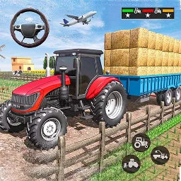

Built this game from scratch in Unity and C#.

PROJECT 24 / Android / Simulation
Real Indian Tractor Simulator
A tractor farming simulation covering field work and transport. Drive the tractor through tasks such as preparing land, sowing, watering and harvesting, then carry produce to market. The project links agricultural activities with vehicle control and mission progression.
Project gallery (5 images)
PERSONAL DEVELOPMENT NOTES
What I built
Tractor driving, farming tasks and produce transport.
Gameplay & systems
Tractor drivingSowing and harvestingCrop careProduce transport
Project information & sources
From-scratch development confirmed by Shehraz Khalid. The 1–4 week duration is an editorial estimate based on the gameplay scope, not a recorded production schedule.
The current store listing is unavailable. This gallery was recovered from an archive matching the exact app ID.
Identifier: com.skyloom.farm.sim.Tractor.Farming.Simulator23
Artwork: Store artwork recovered from the exact app listing on APKPure.
Original source listing Archived listing